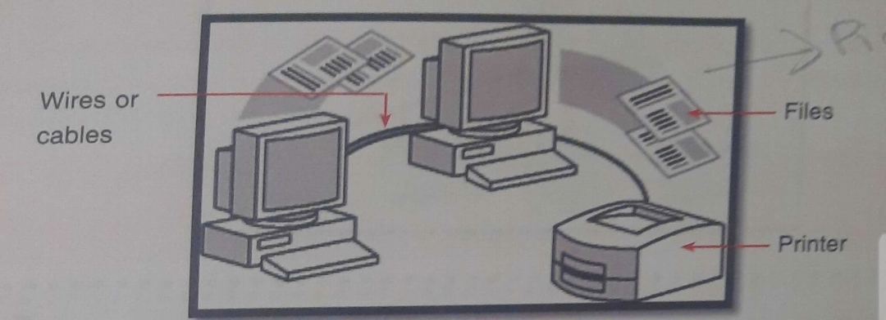
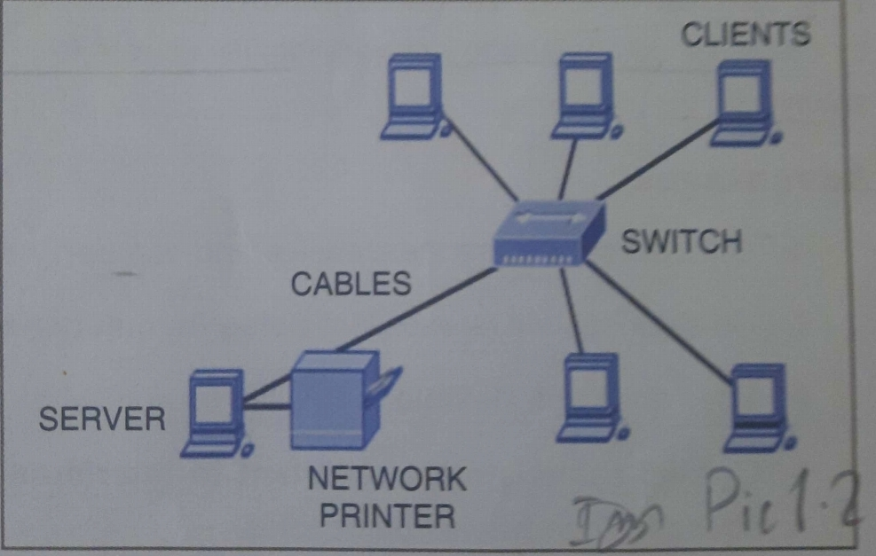
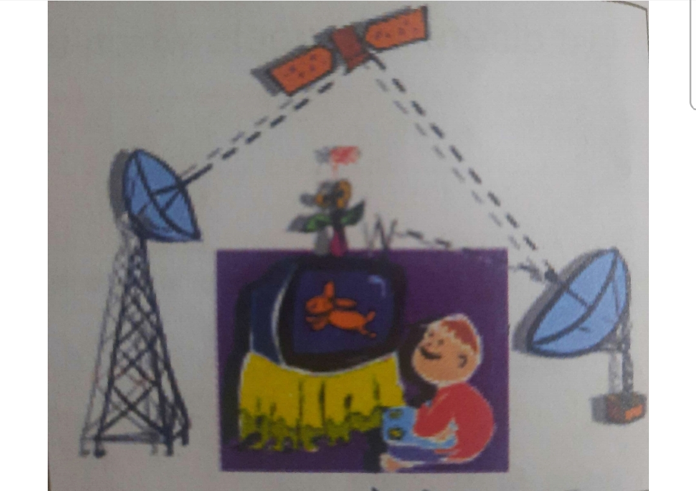
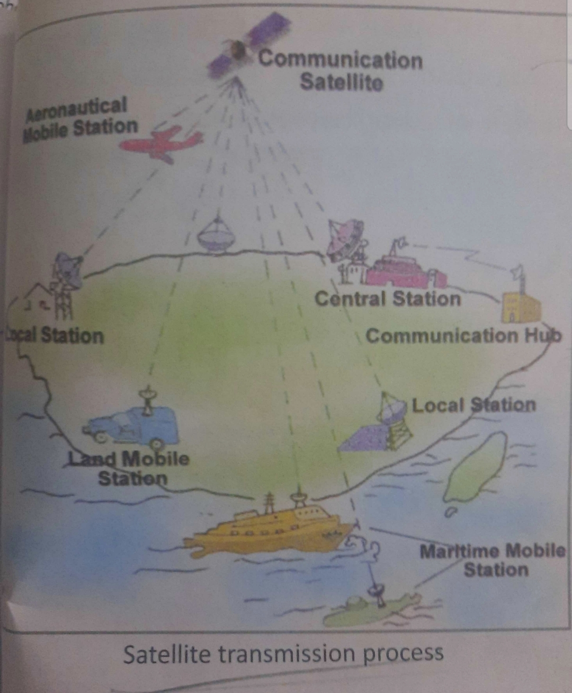
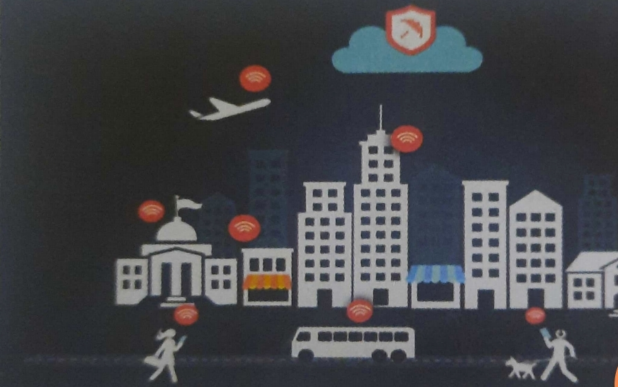

Need of Communication
Communication is important to express oneself.Communication means to be able to convey thoughts and ideas,and everything that needs to be conveyed or expressed.It is certainly true taht not only humans but also many or all animals communicate.
Modes of communication keeps on having diverse changes with flow of time. History of communication started with carrier pigeons, horsemen and then letters and telegrams being used for sending messages. Gradually, with changing times, telephones came into existence.They were very easy to use and also connected as far of distant locations within no time. Since telephones were static so mobile phones were invented and came into existence .
Computers have not only simplified but also made the complex mathematical or scientific calculations possible.
As we all know,each computer has its own keyboard,mouse,scanner and printer also called Peripheral Devices.
If two or more people wish to share the data or infirmation,they have to move around with CD's,DVD's,etc.However,the need of sending and receiving more and more information among individuals/ organizations on the click of a mouse has given birth to the computer networks.
A computer network is a collection of two or more computers connected together in order to communicate and share that data and information.

Usually the connections between computers in a network are made using physical wires or cables. However, some connections are wireless using radio waves or infrared waves.
When we connect two or more computers together we get a network.On this network, a central computer (server),acts as the storage location for files and applications that are shared on network. Servers store and send data to other computers and also control the network access of other computers which are referred to as the 'client' computers.Client are computers that receive and send data from servers.
Devices required for establishing computer network-
- Cables
- NIC(Network Interface Card)
- Switch
- Modem
- Router
- Cables
-A cable is a thick wire, or a group of wires inside a rubber or plastic covering, which is used to carry electricity or electronic signals.They connect the computers or other peripheral devices to each other.
NIC-(Network Interface Card)-A Network Interface Card or NIC is the network interface device which connects the computer to the special device,called switch,which in turn links all the computers on the network together.
Switch-A switch is used to connect multiple devices(such as computers,printers, scanners,etc.) which need to be connected to each other in a network.A switch can thus connect computers, printers and serve,creating a network of shared resources.
Modem-A Modem is a hardware device which means Modulator-Demodulator. Modems are used for data transfer from one computer network to another computer network through telephone lines. The computer network works in digital mode, while analog technology is used for carrying messages across phone lines.The Modulator converts information from digital mode to analog mode at the transmitting end and demodulator converts the same from analog to digital at the receiving end.
Router-Another device most commonly used in networking is a Router which is used to tie or join multiple networks together. The Router will act as a courier choosing the best route for your information to travel so that you receive it quickly.
Wired Network Technology
A wired network is a network which uses networking cables to connect devices (computers,printers, scanners, etc.).
Similarly,the term wireless network refers to two or more computers communicating using standard network rules but without the use of cables to connect the computers together. Instead,the computers use wireless radio signals,microwave signals,satellites to send information from one device to the other.
This image represents a Wired network setup which uses physical cables to transfer data between different devices and computer systems.
Different types of network cables like Coxial Cable,Twisted pair cables are used depending on the networks requirement.
Twisted pair
Some twisted pair cables are-
- Eathernet Cable
- Cat I 5 cable
- Cat I 6 cable
The twisted pair cable used for networking is 9f two types:
shielded and unshieldedAn Eathernet cable is an exame of twisted pair cable.
It is used to connect two network devices directly,the device can be computer,switch ,etc.
| Advantages |
Disadvantages |
- Provides high data transfer speeds and are ot very expensive.
- Less power consumption.
- Simple to install.
|
- Eathernet cables are difficultto troubleshot(diagnose the fault).
- Eathernet Card must be present inside the computer for connecting Eathermet cables.
|
Coaxial Cable
A Co-axial cable consists of a central coppwr wire surrounded by an outer jacket It is used by cable TV companies to connect television sets and antennas.
| Advantages |
Disadvantages |
- Co-axial are in expensive and can carry data over long distances.
- Co-axial cables has excellent noise immunity becauseof its thick outer covering.
- They are light,flexible,and easy to work with.
- Coaxial cable is more resistant to interference and attenuation (the loss of signal
strength) than twisted-pair cables.
|
- Cables that use copper conductors can easily break.
- Thick coaxial cables do not bend easily and thus, are difficult to install and maintain.
|
Fibre Optic Cable
An Optical Fiber cable uses glass threads (fibers) to transmit data, each of which is capable of transmitting messages in the form of light waves. It works on the principle of total internal reflection. These network cables are bendable despite being made of glass.Its work on the pricipal on total internal reflection.
| Advantages |
Disadvantages |
- Easy to install being light in weight.
- Provides very high data transmission speed and carries enormous information at once.
- It provides low error rate and ensures secure transmission.
|
- Fragile (can break easily), needs special care to install them.
- High cost of installation.
|
Wireless Network Technology
There are many wireless mediums available which are used to share or transmit data and resources in a wireless network for example Infrared, Bluetooth, Radiolink, Microwave, Sattelite link etc.
These mediums can, send or transmit data and resources at different speed and distance. Therefore, a medium should be carefully selected depending upon to what distance and at which speed data or resources are to be transmitted.
The world's first wireless computer communication network, known as ALOHAnet, was created in Hawaii by a university professor in 1971. His system used radios and seven computers located across four islands, they communicated with a central computer withoyt th3 use of phone lines. |
|
Bluetooth
- Bluetooth is a wireless technology which uses radio frequencies to transmit information over short distances.
- It allows communication between several devices at a time.
- However, it can work only for short distances generally 10 meters or less.
Infrared Waves
- They are used for communication between devices that are not very far from each other such as in remote controls of your TV sets etc.
- This type of transmission uses infrared light to communicate between two devices.
- it can work only for short distances and it cannot penetrate walls.
- It is affected by distance, noise and heat.
- Normally operates between two devices at a time.
The birth of wireless communications dates back to 1901 when M. G. Marconi successfully established a radio link between a land-based station and a tugboat. |
|
Radio Waves
- Radio waves are electromagnetic signals that are transmitted by an antenna.
- They are Omni-directional waves i.e., they
travel in all the directions from the source.
Radio waves
transmit music, conversations, pictures and data. For example, AM and FM radio, television, cordless telephone,
cellular phones, pagers and wireless LAN etc.
use radio waves to communicate.- Radio waves can travel long distances and can penetrate buildings easily.
- However, these signals get easily affected by rains, thunder storms etc.
Satellite Communication
- Satellite communication is widely used all over the world, allowing users to transmit (send) a signal to any part of the earth's surface.
- When a signal is sent to a satellite, it either reflects it back to the earth or transmits it to another satellite.This way,it can reach anywhere on the earth.
- Now a day, satellite transmission is extensively used by major television broadcasting companies.


3G(Third Generation)
- 3G is the new generation of wireless network technology
- It has Increased the speed of communication
- The objective of this technology is to provide various value added services like video calling, live streaming.mobile internet access, IPTV, etc. on te mobile phones.
4G(fourth Generation)
- 4G is the successor technology of 3G
- It offers more bandwidth and services as compared to 3G.
- The bandwidth is approx..(100 MHz) and transfers data at much higher rates.
- 4G technology is also referred to as
MAGIC
.
Wi-Fi
Wi-Fi is the most popular wireless communication technology used within a room or a building for connecting to Internet. Wi-Fi uses radio waves (RF) to allow two OR more devices to communicate with one another.This technology is most commonly used to connect devices like computers, tablets and mobile phones to the internet. It typically provides network access for a few hundred feet with a network speed of approximately 54 Mbps.Wi-Fi networks need to be password protected for security purposes to safeguard it from unauthorised users.
WiMax

- WiMAX (Worldwide Interoperability for Microwave Access) is similar to Wi-Fi.
- However, it works on a much larger scale and at faster speeds.
- WIMAX covers greater distance and can cover large cities.
- WIMAX also has a range of up to 50 km. This wireless technology allows data to be transferred at a rate of 70 Mbps or more.
Types Of Network
Wired or wireless networks can be classified or divided into various types depending upon the area covered by the network or size of the network. A network can be established in a small room or a building or it can be as big as covering the whole city or town.
Depending upon the geographical area covered by a network, it is classified as:
Local area networks(LANs):
- Local Area Network (LAN) is a computer network covering a small area like a home, office, or a group of buildings, such as a school or a college.
- A simple LAN can consist of a Personal Computer and a printer or it can connect several computers
- it is usually fast, with speed from 10 Mbps to 10 Gbps.
- All the connected devices share information (text,graphics, video, audio etc.) with each other.
- It requires little wiring, typically a single cable connected to each device.
- its set-up involves lower cost as compared to MAN'S or WAN's.
- LAN's can be either wired or wireless.
Metropolitan area networks(MANs):
- A metropolitan area network (MAN) is a computer network covering a large area like a campus, corporate offices or a city.
- It is also used as the interconnection of several local area networks.
- A MAN is often a high speed network and allows sharing of multiple resources.
- Examples of MAN: Telephone company network that providesa high speed DSL to customers and cable TV network,Branches of a Nationalised bank in several cities connected together.
Wide area networks(WANs):
- A Wide Area Network connects LAN and MAN together.
- It covers a large geographical area.
- This network may be located throughout a country or a continent or even around the world.
- WANS may transmit data over high-speed phone lines or wireless links such as satellites
- Internet and ATM facility are the examples of WANS.
Internet
Internet is a global network connecting millions of computers.
Internet is often referred to as a Network of Networks or the World Wide Web (WWW).We can send text messages, Images, videos and audios to our friends living in any part of the world using WhatsApp or electronic mail. We can also search for any information on the internet and email file attachments. Internet enables even dissimilar computers with different operating systems to communicate with each other using a standard set of protocols (rules) called as networking protocols.